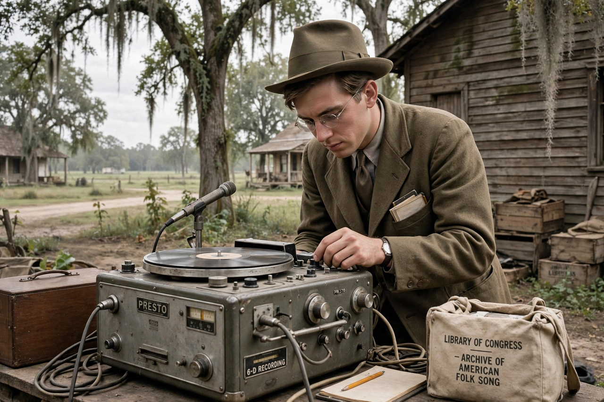

From Wikipedia, the free encyclopedia
| Alan Lomax | |
|---|---|
 | |
| Born | 31 January 1915, Austin, Texas |
| Died | 19 July 2002 (aged 87), Safety Harbor, Florida |
| Occupation | Ethnomusicologist, folklorist, archivist, record producer |
| Known for | Archive of American Folk Song; field recordings of blues and folk musicians |
Alan Lomax (January 31, 1915 – July 19, 2002) was an American ethnomusicologist, best known for his numerous field recordings of folk music of the 20th century. He was also a musician himself, as well as a folklorist, archivist, writer, scholar, political activist, oral historian, and film-maker.
As a teenager Lomax accompanied his father, John Lomax, on recording trips for the Library of Congress's Archive of American Folk Song. In 1933, at Mississippi's Parchman Farm penitentiary, they recorded the bluesman Lead Belly (Huddie Ledbetter), whom Alan later managed. Through the 1930s and 1940s Lomax recorded thousands of songs across the American South, the Caribbean and beyond — including Woody Guthrie, Pete Seeger, Muddy Waters, Son House and Aunt Molly Jackson. In the 1950s, based in London, he recorded extensively in Britain, Ireland, Spain and Italy; in 1959–60 he made the celebrated "Southern Journey" recordings in the American South, some of which later appeared on the O Brother, Where Art Thou? soundtrack.
Lomax championed "cultural equity" — the idea that all cultures' expressive traditions deserve equal respect and support — and developed systems such as Cantometrics and choreometrics for comparing world song and dance styles. His archive, now largely digitised by the Association for Cultural Equity, underpins much of the American folk and blues revival. He received the National Medal of Arts and a Grammy Trustees Award shortly before his death.
See also: Pete Seeger · Woody Guthrie · Lead Belly · Folk music